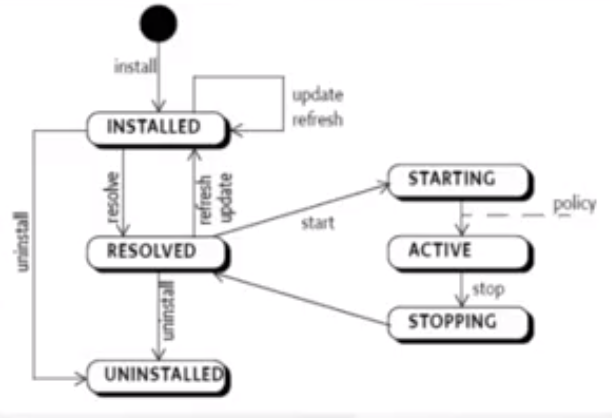
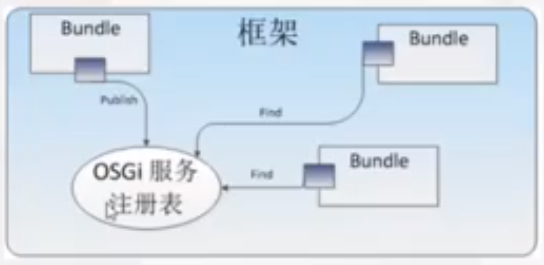

OSGi
OSGi基础
Class Loader
- In web container such as Tomcat
- In Andriod
OSGi组成
分层

模块层 ：关注打包和代码共享。
OSGi 是严格要求模块化的，模块有个专有名词 bundle。每个模块都是一个 bundle，一个 Business Logic 由多个 bundle 来实现。
注：后面全部使用 bundle 代替模块来表述。
模块层定义了 OSGi 中的模块 bundle：
bundle 是以 jar 包形式存在的个模块化物理单元，里面包含了代码，资源文件和元数据(metadata)，井且 jar 包的物理边界也同时是运行时逻辑模块的封装边界。
bundle 是开发、部署 OSGi 应用的基本单元。
bundle 的核心是 META-NF 目录下的 MANIFEST.MF 文件。
bundle 定义了其所包含的包的可见性、可以认为是在 public/private/protected 的基础上的一个扩展。
bundle 的 java 包共享、屏蔽的规则。通过 Export-Package、Import-Package 方式进行交互。
每个 bundle 都有单独的类加加载器。
生命周期层 ：关注提供执行模块管理和对底层 OSGi 框架的访问。

bundle 是需要 OSGi 进行解析的，每个 bundle 在变得可用之前，都需要完整经历该生命周期。
OSGi 生命周期层有两种不同的作用:
在应用程序外部，定义了对 bundle 生命周期的相关操作。OSGi 生命周期层允许在执行时，从外部安装、启动、更新、停止、卸载不同的 bundle 进而定制应用的配置。
在应用程序内部，定义了 bundle 访问其执行上下文的方式，为 bundle 提供了一种与 OSGi 框架交互的途径以及一些执行时的便利条件。
服务层 ：关注模块，特别是模块内的组件的交互和通讯。
OSGi 技术全面贯彻了 SOA，每个 bundle 都是其他 bundle 提供服务，夸张一点说，不提供服务的 bundle 就没有存在的价值。
OSGi 的服务层除了面向服务的编程模型，还有一个区别于其他很多类似模型的特性。也就是说，当一个 bundle 发现并开始使用 OSGi 中的一个服务了以后，这个服务可能在任何的时候改变或者是消失。
OSGi 框架有一个中心化的注册表，这个注册表从 publish-find-bind 模型:

OSGi 核心规范(core specification)中的服务，为核心服务，必须存在的。
OSGi Framework
Equinox：OSGi R4 core framework 的一个实现，一组实现各种可选的 OSGi bundle 和一些开发基于 OSGi 技术的系统所需要的基础构件。 Eclipse 是基于 Equinox 项目开发的一个典型例子。具体内容可以从 http://www.eclipse.org/equinox/ 下载。比较适合不需要集成太多外部技术的应用，如桌面应用开发，当需要进行集成时，会遇到相当多的兼容性问题;
Apache Felix：实现 OSGi R4 规范(包括 OSGi 框架，Standard Service 和其它 OSGi 相关技术)的另一个开源项目。具体内容可以从 http://felix.apache.org/ 下载。与 Equinox 非常相似，都属于基础环境。但也有一个最大的不同，其兼容性、可扩展性都比较强，能够很方便的集成 Web Container、DataSource 管理等许多实际开发中必须具备的组件。但是这里有个很大的隐患：所有的集成都需要手工完成，质量、测试都无法保证，作为系统最重要的基础运行环境，其稳定性、可靠性是至关重要的。
Apache Karaf：一个基于 OSGi 的运行环境，它提供了一个轻量级的 OSGi 容器，可以用于部署各种组件和应用程序。它提供了很多的组件和功能用于帮助开发人员更加灵活的部署应用，更适合作为商业化产品的开发、运行平台。具体内容可以从 http://karaf.apache.org/ 下载。
JAVA 9 Module && OSGi
Java 9，OSGi和模块化的未来